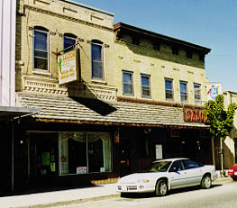

| The Saloon, a restaurant which serves Mexican and American food and homemade pizza, is located at 123 E. Cook Street, downtown Portage, WI. Established in 1984 by the present owners, it is open daily for breakfast, lunch and dinner, with an associated catering and to-go business. The owners, Ron and Sandy Blankenheim, also own another restaurant and wish to cut back, "getting older." |  |
Portage is a town of about 9,000 people in central Wisconsin with a good manufacturing base, good schools and a great place to live. Several state highways pass right through town, and we are just a few miles from Interstate highways I90/94 and I39. We are about 35 miles north of Madison (the state capital) and 16 miles south of Wisconsin Dells (one of Wisconsin's main tourist attractions).
Asking price is $250,000, which includes both buildings, all fixtures and equipment, liquor license and goodwill. Owner will hold second mortgage not to exceed 20% of sale price at 8.0% interest for 10 years. Food, liquor and paper goods are not included in sale price but can be purchased separately at cost.
Ron and Sandy Blankenheim
1092 Saddle Ridge
Portage, WI 53901
Business Phone: (608) 742-8208
Home Phone: (608) 742-2978